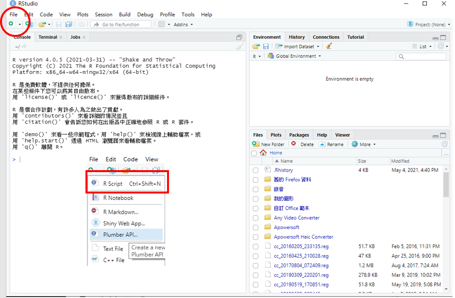

Chapter 2 基礎篇_R 與R studio的介紹
2.1 什麼是R 和 Rstudio
R是一套開放式的統計程式語言，主要用於資料分析與統計運算，使用者可以免費的下載並安裝在任何的作業系統上。
R studio是一套提供R整合開發環境的軟體(Integrated Development Environment; IDE）。
2.3 Rstudio介面與初步設定
2.3.2 Rstudio初步設定
- Tools > Global Options
- Code: Display tab下勾選Show whitespace characters。
- Appearance: 可改變RStudio Theme.
2.3.3 新建R Script

R Script(.R file)是純粹執行R的語法
另外還有R Markdown or R Notebook (.Rmd file)，是用markdown方式呈現將文字、程式、表格與圖都編輯在同一份文件之中(在此不多做介紹)
2.4 安裝套件和help
安裝套件：安裝只需要做一次，就是將你要的套件從網路上抓下來並安裝到你的電腦裡
載入套件：確定要用的套件已經在電腦中後，在使用前，需要將該套件載入至R才能夠使用
例如，
我們想要裝haven這個套件。
等R跑完安裝後，就可將這個套件載入。必須載入後才能夠使用這個套件
這個套件可以讓我們將SPSS, SAS, STATA等資料檔讀入R之中。
至於詳細的用法，我們可以用「help」來看這個套件的語法該如何設定
# 安裝套件：
install.packages("haven")
# 載入套件：
library(haven)
## or
require(haven)
# 查詢套件/函數用法
help(haven) ## 查詢套件
help(read_dta) ## 查詢函數
## or
?haven
?read_dta
## or 在想查詢的套件/函數上面按F12.5 錯誤訊息
在按鍵或執行程式時可能會遇到一些錯誤訊息，
常見的錯誤訊息如下(參考):
- Message：有可能的錯誤通知，程式會繼續執行
- Warning：有錯誤，但是不會影響太多，程式會繼續執行
- Error：有錯，而且無法繼續執行程式
- Condition：可能會發生的情況